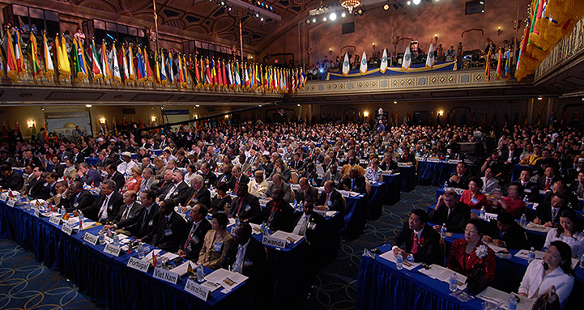

2007
2007 Motto: "Länge leve en värld för den himmelska nationen av lugn och kosmisk fred!"
Idag 4 april 2007, förkunnar jag gryningen av Den nya himmelska civilisationen med universell fred.
4 aug 2007 Historiskt World Peace Center etablerat i Pyeongyang NordKorea!
Kära broder Hugo, nat. Messias från Italien, gick vidare till andliga världen!
 Boken
Christ Returns - Revealing startling Truths publiceras.
Boken
Christ Returns - Revealing startling Truths publiceras.
Jesus talar genom en anonym engelsk kvinna, i 9 brev.
"...för att göra det möjligt för mänskligheten att konstruera ett NYTT
MEDVETANDE under de kommande tvåtusen åren. Dessa BREV är fröna till
mänsklighetens framtida andliga evolution.

Sanne Far lanserar "Guds-centrerat" Abel-FN den 23 september 2007 på
Assembly 2007 i New York.
Fredsbudskap nr 1-12, trycks på svenska.
Titel:
Guds ideala familj och himmelriket av den fredliga, ideala världen